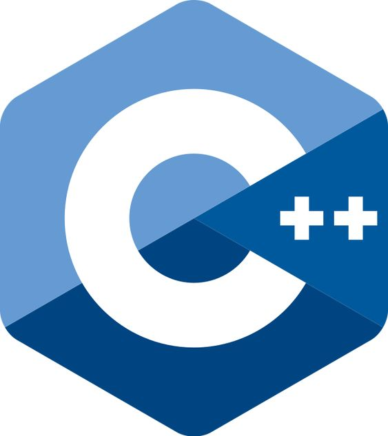

My skills

C Programming

C++
Web Development
C Programming
C++
Web Development
I designed and developed a compact website tailored for movie enthusiasts, granting them access to a diverse array of detailed movie reviews. The project encompassed the creation of a robust user login system, ensuring a secure environment while fostering increased user engagement. A key focus was delivering a personalized browsing experience to cater to individual preferences. To enhance inclusivity, I integrated a language selection feature, catering to a broad audience with varied linguistic preferences. This undertaking showcases my proficiency in web development, user authentication protocols, and user interface design. The amalgamation of these skills aimed to provide a seamless and enjoyable platform for users passionate about exploring and engaging with movie content on a deeper level.
I innovatively developed a Convolutional Neural Network (CNN)-based device aimed at assisting visually impaired individuals in distinguishing between various Indian currency denominations. Leveraging the power of image comparison, the device employs advanced machine learning techniques to accurately recognize and differentiate between different currency notes. The system incorporates a user-friendly voice output feature, offering seamless auditory feedback for easy and precise identification of currency values. This technology not only addresses a critical need for the visually impaired but also showcases the potential of artificial intelligence in creating inclusive solutions. The CNN-based device stands as a testament to my commitment to harnessing cutting-edge technology for the betterment of accessibility and quality of life for individuals with visual impairments.